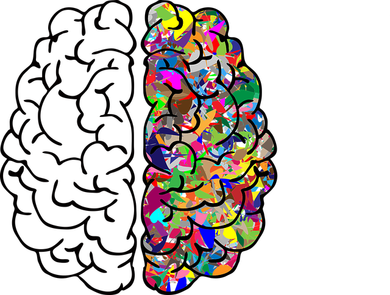

<mat-toolbar color="primary">
    <mat-toolbar-row>
       <div class="title-elements" fxLayout="row" fxLayoutAlign="space-evenly center" >
          <button mat-icon-button>
            <mat-icon (click)="onToggle()">menu</mat-icon>
          </button>
          <h1 class="title">K-Base</h1>
          
      </div>
      <span class="menu-spacer"></span>
      <div>
        <a mat-button [routerLink]="'/dashboard'"  routerLinkActive="router-link-active" > Dashboard </a>
        <a mat-button [routerLink]="'/concepts'"  routerLinkActive="router-link-active" > Concepts </a>
        <a mat-button> Logout </a>
        
      </div>
      <kb-quick-add-concept></kb-quick-add-concept>
    </mat-toolbar-row>
  
    <mat-toolbar-row>
        <span style="font-size: 12px;">Actionable Knowledgebase</span>
      </mat-toolbar-row>
  </mat-toolbar>
  <ng-content>

  </ng-content>